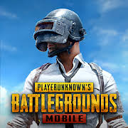

Warzone Game
PUBG Mobile[a] is a free-to-play battle royale video game co-developed by LightSpeed & Quantum Studio, a division of Tencent Games and Krafton,Inc. It is a mobile game adaptation of PUBG: Battlegrounds. It was initially released for Android and iOS on 19th of March 2018. It was published by multiple publishers in different regions, including Krafton, Tencent, and VNG Games.[2][3] By December 2022, PUBG Mobile had accumulated around 1.3 billion downloads while grossing over $9 billion. It is also the second most-played mobile video game of all time.[4] In 2021, the game spawned an Indian version, Battlegrounds Mobile India, and a separate game taking place in the PUBG Universe, called New State Mobile.